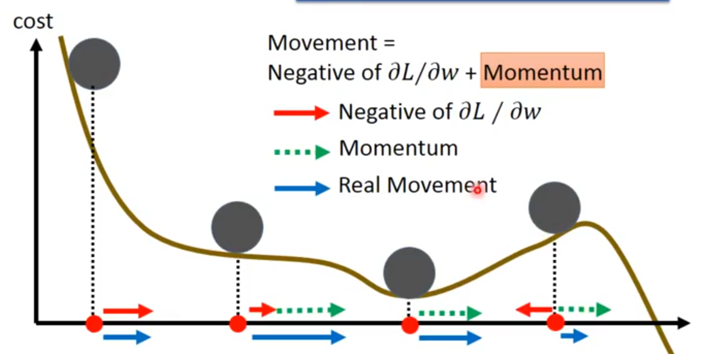
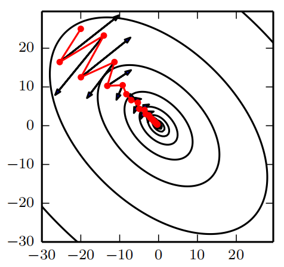
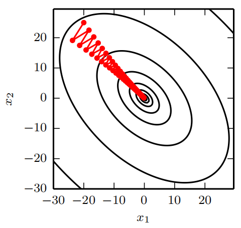
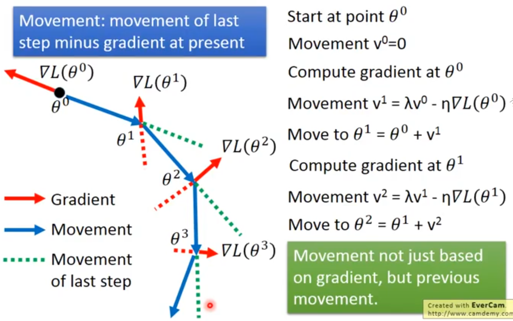

1. 引入动量算法
虽然随机梯度下降仍然是非常受欢迎的优化方法，但其学习过程有时会很慢。 动量方法旨在加速学习，特别是处理高曲率、小但一致的梯度，或是带噪声的梯度。
[success] 问： 为什么动量方法适用于高曲率的梯度？
答：高曲率代表二阶导数大。动量算法不仅考虑一阶偏导、还考虑了二阶偏导。较大的二阶偏导也对参数的移动方向有指导意义。
问： 为什么动量方法适用于小但一致的梯度？
动量算法会考虑历史梯度的积累。小的梯度导致在普通梯度下降法上学习速度慢。但由于它的方向一致，动量算法会通过积累历史梯度而增大当前的step，从而加速学习。
问： 为什么动量方法适用于带噪声的梯度？
答：普通的梯度下降法会可能会卡平坦点、鞍点、局部最小点，因此这些地方的偏导数为0。但动量算法能解决这一问题。

动量算法积累了之前梯度指数级衰减的移动平均，并且继续沿该方向移动。
[success] 指数级衰减的移动平均
动量的效果如图8.5所示。

[info] 动量的主要目的是解决两个问题：Hessian矩阵的病态条件和随机梯度的方差。 我们通过此图说明动量如何克服这两个问题的第一个。 等高线描绘了一个二次损失函数（具有病态条件的Hessian矩阵）。 横跨轮廓的红色路径表示动量学习规则所遵循的路径，它使该函数最小化。 我们在该路径的每个步骤画一个箭头，表示梯度下降将在该点采取的步骤。 我们可以看到，一个病态条件的二次目标函数看起来像一个长而窄的山谷或具有陡峭边的峡谷。 动量正确地纵向穿过峡谷，而普通的梯度步骤则会浪费时间在峡谷的窄轴上来回移动。 比较图4.6，它也显示了没有动量的梯度下降的行为。 
[warning]
[?]“动量用于解决随机梯度的方差”是什么意思？要看下原文，感觉是没翻译好
[success] 关于Hessian矩阵病态问题。
具有病态问题的Hessian矩阵
DL中的病态问题
病态的Hessian矩阵对DL训练会产生问题，是因为上图中椭圆的长轴和短轴差别太大。而同样的学习率，在长轴方向上效果不够，而难以收敛。在短轴方向上用力过猛而来回震荡。
牛顿法根据椭圆的曲率自适应地计算出合适的学习率，从而使得在每个方向的表现都是合适的。
动量算法从另一个角度来解决问题，它保持学习率不变调整g。在长轴方向上，g因积累而越来越大，加速收敛（这句我觉得不对）。在短轴方向是，g因来回震荡而萎缩，抑制了震荡。
因为动量算法的原因，短轴方向的g会自动调小，这样可以设置较大的lr而不用担心短轴方向的震荡和不收敛。lr大了训练也就快了。但（不考虑增加lr）动量算法本身不能增大长轴方向的g，因为这个g是真实g的平均。真实g没有变，经过指数衰减后的g也不会自己变大。
2. 动量算法
从形式上看，动量算法引入了变量充当速度角色——它代表参数在参数空间移动的方向和速率。 速度被设为负梯度的指数衰减平均。
[success]
指数衰减平均
名称动量来自物理类比，根据牛顿运动定律，负梯度是移动参数空间中粒子的力。 动量在物理学上定义为质量乘以速度。 在动量学习算法中，我们假设是单位质量，因此速度向量也可以看作是粒子的动量。 超参数决定了之前梯度的贡献衰减得有多快。
[success] Ng补充：通常设置为0.9
更新规则如下：
速度累积了梯度元素。
[success]
对比原始的随机梯度下降算法
相当于，计算新速度时不考虑原速度。
一张图解释动量算法的过程：

相对于，越大，之前梯度对现在方向的影响也越大。 带动量的SGD算法如算法8.2所示。
[success]
计算梯度：
更新速度：
更新参数：
以上过程中，“更新速度”这一步利用了指数衰减平均的原理。
指数衰减平均：
更新速度：
更新参数：
在现在标准版本中，将“更新参数”中的代替“更新速度”中的
这样做的好处是：调度不影响。
\begin{algorithm}[ht]
\caption{使用动量的随机梯度下降（SGD）}
\label{alg:momentum}
\begin{algorithmic}
\REQUIRE 学习率 {% math_inline %}\epsilon{% endmath_inline %}， 动量参数 {% math_inline %}\alpha{% endmath_inline %}
\REQUIRE 初始参数 {% math_inline %}\theta{% endmath_inline %}，初始速度 {% math_inline %}v{% endmath_inline %}
\WHILE{没有达到停止准则}
\STATE 从训练集中采包含{% math_inline %}m{% endmath_inline %}个样本{% math_inline %}\{ x^{(1)},\cdots, x^{(m)}\}{% endmath_inline %} 的小批量，对应目标为{% math_inline %}y^{(i)}{% endmath_inline %}。
\STATE 计算梯度估计：{% math_inline %}g \leftarrow
\frac{1}{m} \nabla_{\theta} \sum_i L(f(x^{(i)};\theta),y^{(i)}){% endmath_inline %}
\STATE 计算速度更新：{% math_inline %}v \leftarrow \alpha v -
\epsilon g{% endmath_inline %}
\STATE 应用更新：{% math_inline %}\theta \leftarrow \theta + v{% endmath_inline %}
\ENDWHILE
\end{algorithmic}
\end{algorithm}
之前，步长只是梯度范数乘以学习率。 现在，步长取决于梯度序列的大小和排列。 当许多连续的梯度指向相同的方向时，步长最大。 如果动量算法总是观测到梯度，那么它会在方向上不停加速，直到达到最终速度，其中步长大小为
[info] 为什么步长公式里没有上一次的v？
因此将动量的超参数视为有助于理解。 例如，对应着最大速度倍于梯度下降算法。
在实践中，的一般取值为，和。 和学习率一样，也会随着时间不断调整。 一般初始值是一个较小的值，随后会慢慢变大。 随着时间推移调整没有收缩重要。
3. 怎样理解动量算法
我们可以将动量算法视为模拟连续时间下牛顿动力学下的粒子。 这种物理类比有助于直觉上理解动量和梯度下降算法是如何表现的。
粒子在任意时间点的位置由给定。 粒子会受到净力。 该力会导致粒子加速：
与其将其视为位置的二阶微分方程，我们不如引入表示粒子在时间处速度的变量，将牛顿动力学重写为一阶微分方程：
假设粒子的质量为1
= t时刻的位置
= t时刻的速度 = t时刻的动量
= t时刻的力 = t时刻的加速度
由此，动量算法包括通过数值模拟求解微分方程。 求解微分方程的一个简单数值方法是欧拉方法，通过在每个梯度方向上小且有限的步来简单模拟该等式定义的动力学。
[success] 通过数值模拟求解微分方程?欧拉方法?
3.1. 动量算法中的力
这解释了动量更新的基本形式，但具体是哪些力呢？
[success]
作用力：，正比于代价函数的负梯度的力
粘性阻力：av，正比于的力
3.1.1. 动力
一个力正比于代价函数的负梯度。 该力推动粒子沿着代价函数表面下坡的方向移动。 梯度下降算法基于每个梯度简单地更新一步，而使用动量算法的牛顿方案则使用该力改变粒子的速度。 我们可以将粒子视作在冰面上滑行的冰球。 每当它沿着表面最陡的部分下降时，它会沿该方向加速滑行，直到开始向上滑动为止。
3.1.2. 阻力
另一个力也是必要的。 如果代价函数的梯度是唯一的力，那么粒子可能永远不会停下来。 想象一下，假设理想情况下冰面没有摩擦，一个冰球从山谷的一端下滑，上升到另一端，永远来回振荡。 要解决这个问题，我们添加另一个正比于的力。 在物理术语中，此力对应于粘性阻力，就像粒子必须通过一个抵抗介质，如糖浆。 这会导致粒子随着时间推移逐渐失去能量，最终收敛到局部极小点。
为什么要特别使用和粘性阻力呢？ 部分原因是因为在数学上的便利——速度的整数幂很容易处理。 然而，其他物理系统具有基于速度的其他整数幂的其他类型的阻力。 例如，颗粒通过空气时会受到正比于速度平方的湍流阻力，而颗粒沿着地面移动时会受到恒定大小的摩擦力。 这些选择都不合适。 湍流阻力，正比于速度的平方，在速度很小时会很弱。 不够强到使粒子停下来。 非零值初始速度的粒子仅受到湍流阻力，会从初始位置永远地移动下去，和初始位置的距离大概正比于。 因此我们必须使用速度较低幂次的力。 如果幂次为零，相当于干摩擦，那么力太强了。 当代价函数的梯度表示的力很小但非零时，由于摩擦导致的恒力会使得粒子在达到局部极小点之前就停下来。 粘性阻力避免了这两个问题——它足够弱，可以使梯度引起的运动直到达到最小，但又足够强，使得坡度不够时可以阻止运动。
[success]
湍流阻力：
干摩擦力：
粘性阻力：